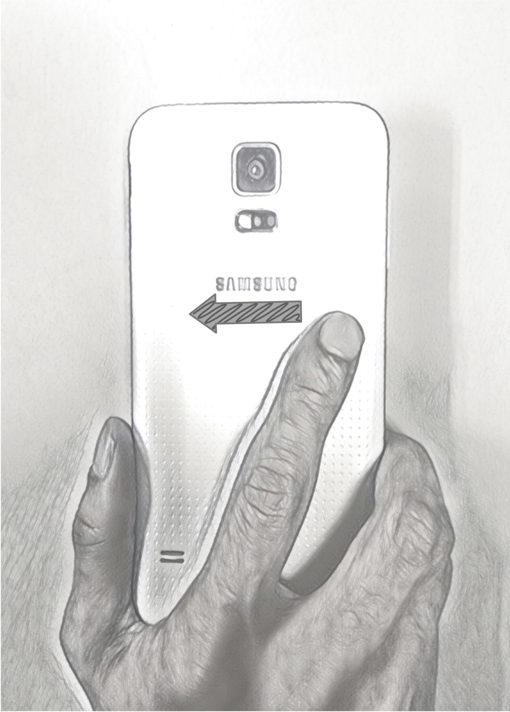
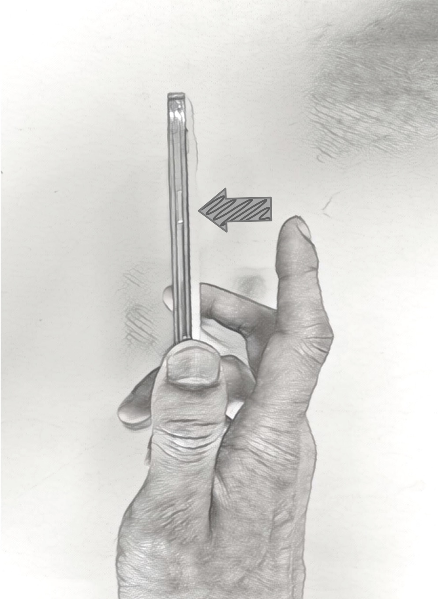
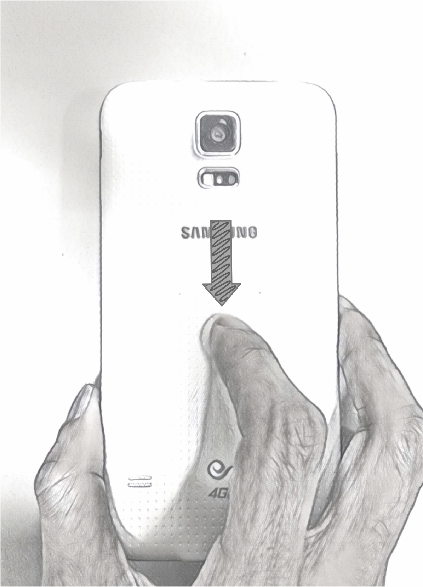
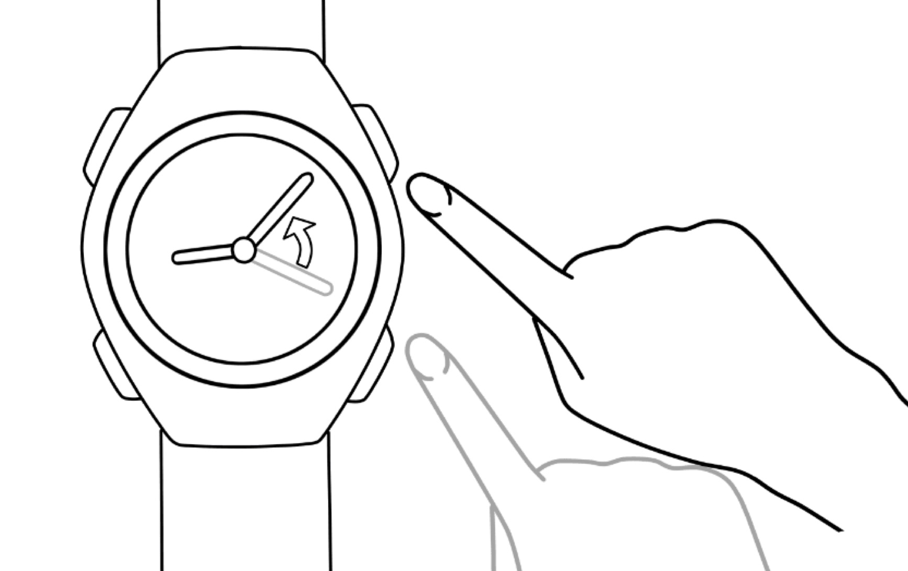
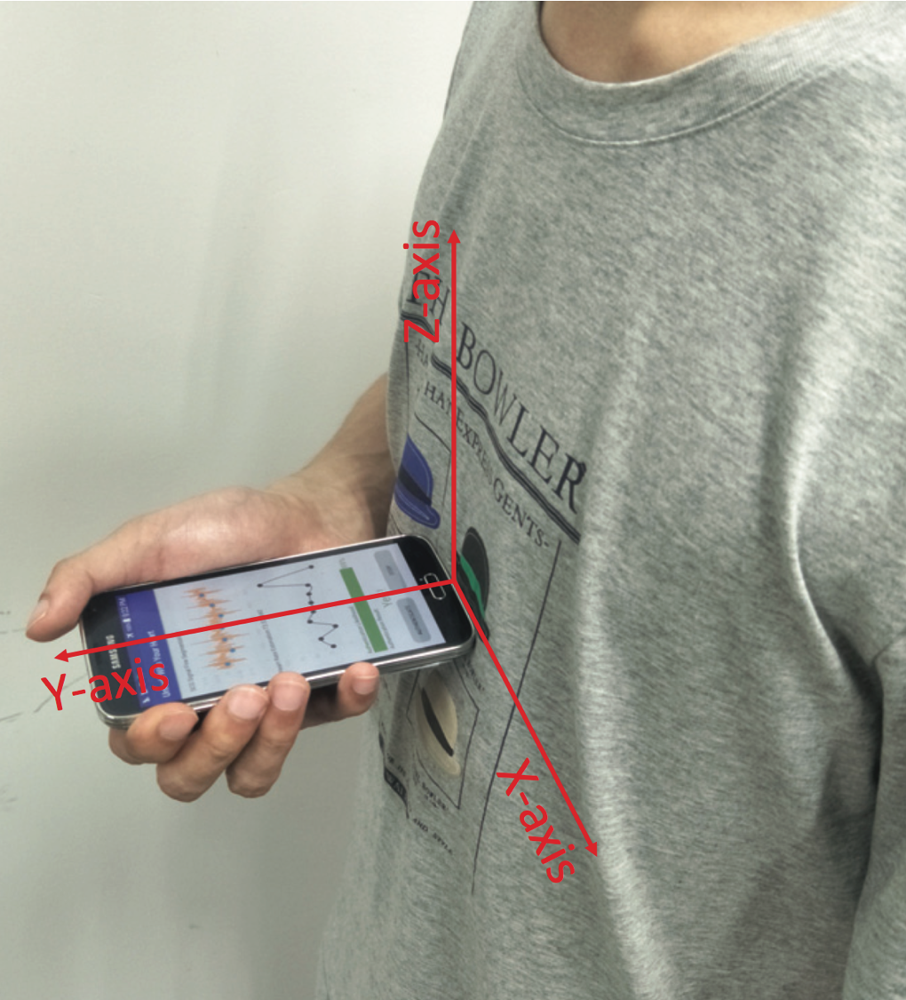
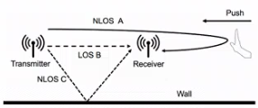

VSkin: Sensing Touch Gestures on Surfaces of Mobile Devices Using Acoustic Signals
Enabling touch gesture sensing on all surfaces of the mobile device using acoustic signals.
Separating the structure-borne and the air-borne sound signals from the captured signals.
Performing the phase and magnitude measurement of multiple sound paths at a high sampling rate of 3 kHz.
Sensing touch gestures, such as swiping, tapping, and scrolling, on different kinds of commerical mobile phones.
To appear in MobiCom 2018.



Depth Aware Finger Tapping on Virtual Displays
Fusing ultrasound sensing information and vision information to achieve tapping-in-the-air for AR/VR systems.
Achieving mm-level accuracy, less than 20 ms latency and high robustness with low computational cost.
Measuring the finger bending angle to provide different levels feedback by sensor fusion.
Bring tapping-in-the-air to any low-end mobile devices.
Publicated in MobiSys 2018.
Device-free Gesture Tracking using Acoustic Signals
Enabling device-free gesture tracking using acoustic signals on existing mobile devices as software.
Using the acoustic phase to get fine-grained movement direction and movement distance measurements.
Enabling 2-D gesture tracking based on delay profile path measurement.
Achieves mm-level accuracy, less than 15 ms latency, and lower than 3% CPU usage on commercial mobile phones.
Publicated in MobiCom 2016.

Biometrics-based applications
Unlock With Your Heart: Heartbeat-based Authentication on Commercial Mobile Phones
Enabling heartbeat-based authentication on commercial mobile devices using the built-in accelerometer.
Proposing a set of novel signal processing schemes designed for heartbeat-based user authentication, including template-based heartbeat alignment, wavelet-based feature extraction, and dynamic heartbeat pattern selection.
Implementing real-time heartbeat-based authentication system on commercial smartphones.
Achieving high authentication accuracy for different kinds of cases.
To appear in UbiComp 2018.

HCI systems based WiFi signals
WiTrace: Centimeter-Level Passive Gesture Tracking Using WiFi Signals
Enabling device-free cm-level gesture tracking system using WiFi signals.
Extracting the phase of the signals reflected by the hand from the composite signals, and measures the phase changes to obtain the movement distance
Using one transmitter and two receivers to enable the 2D tracking of hand.
Publicated in SECON 2018.

Wireless charging scheduling
Charging Task Scheduling for Directional Wireless Charger Networks
Considering the problem of charging task scheduling for directional wireless charger networks aiming for maximizing the overall charging utility of offline/online charging tasks.
Scheduling the orientations of all the chargers with time in a centralized offline (distributed online) fashion to maximize the overall charging utility for all the tasks.
Bounding the performance loss of scheduling delay, and proving that our distributed online algorithm competitive ratio.